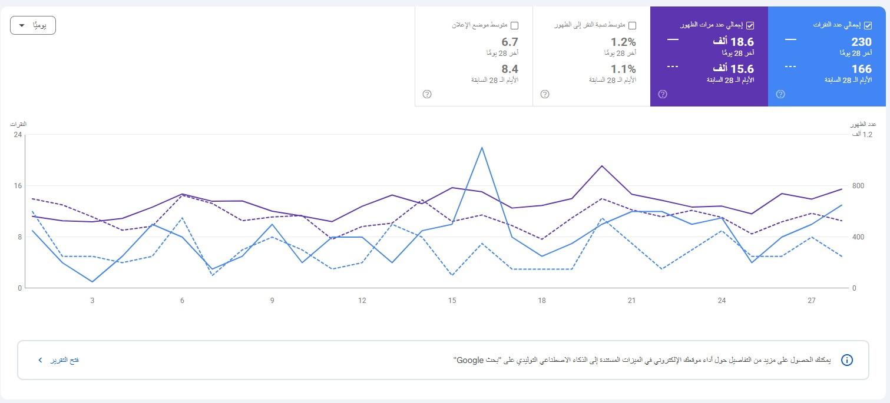
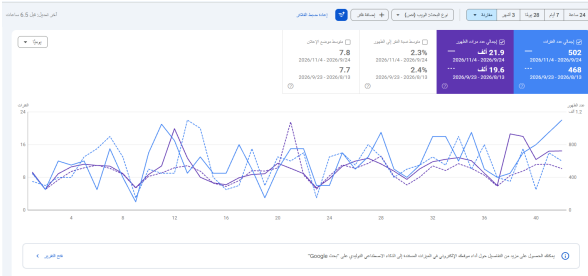
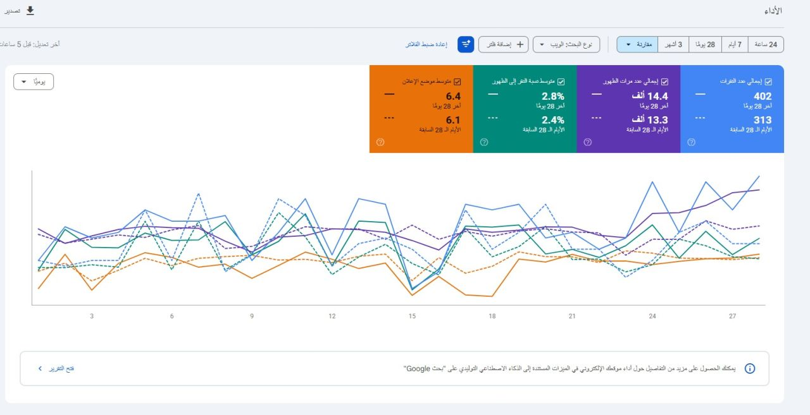

Technical SEO
Crawlability, indexing, site architecture, technical audits, performance and structured data.
↗SEO SPECIALIST · ORGANIC GROWTH
I'm Eslam Hariz, an SEO Specialist with 5+ years of experience. I build practical, data-led SEO strategies that improve search visibility, strengthen content, and support sustainable organic growth.
It is the result of understanding people, search engines, and the business behind the website.
I'm an SEO Specialist with 5+ years of hands-on experience developing and executing strategies across technical SEO, keyword research, on-page optimization, content planning, competitor analysis, and link building.
I enjoy finding the opportunities hidden in data, prioritizing work by impact, and turning complex SEO challenges into clear, actionable plans.
More about working together ↗Connected disciplines. One goal: sustainable organic performance.
Crawlability, indexing, site architecture, technical audits, performance and structured data.
↗Search intent analysis, keyword mapping, opportunity research and competitor gap analysis.
↗Content optimization, metadata, topical relevance, internal linking and content planning.
↗Backlink analysis, link-building campaigns, authority development and profile monitoring.
↗Performance tracking, reporting, insights from Search Console and GA4, and prioritization.
↗SEO roadmaps aligned with business goals, resources, competition and growth opportunities.
↗A selection of SEO projects across different industries, with performance indicators captured from Google Search Console.
Content improvement and optimization, supported by backlink building, with the goal of growing organic traffic and strengthening search visibility.
Last 28 days vs. previous 28 days: clicks +38.6% · impressions +19.2%.

View Google Search Console evidence ↗ Visit Website ↗SEO support focused on improving website content, increasing organic search visits, and building backlinks to support search visibility.
Last 28 days vs. previous 28 days: clicks +53.1% · impressions +24.5%.

View Google Search Console evidence ↗ Visit Website ↗Content development and SEO optimization, aimed at increasing organic visits, improving click-through rate, and supporting stronger search visibility.
Last 28 days vs. previous 28 days: clicks +28.4% · impressions +8.3%. Average position: 6.4 vs. 6.1.

View Google Search Console evidence ↗ Visit Website ↗SEO activities focused on content improvement, organic search growth, and backlink building to strengthen the website's visibility in Google.
Google Search Console reporting period: May 5 – July 28, 2026. No previous-period comparison was provided.
 View Google Search Console evidence ↗
Visit Website ↗
View Google Search Console evidence ↗
Visit Website ↗
Performance figures are taken from the supplied Google Search Console screenshots. Comparative growth is shown only where both periods were visible; metrics do not isolate the impact of any single SEO activity.
SEO works best when every action has a reason and every result is measured.
Understand the business, audience, website, competitors and current search performance.
Identify the highest-impact opportunities and turn them into a practical roadmap.
Implement technical, content and authority improvements with clear ownership.
Track outcomes, learn from the data and continuously improve the strategy.
Practical experience across SEO planning, implementation, optimization and reporting.
SEO strategy, technical and on-page optimization, keyword research, content planning, competitor analysis and link building.
SEO support for websites across different business categories, including audits, content optimization and backlink activities.
Have a role, project or SEO challenge in mind? I'd be glad to hear about it.
Available for full-time, part-time and freelance SEO projects.